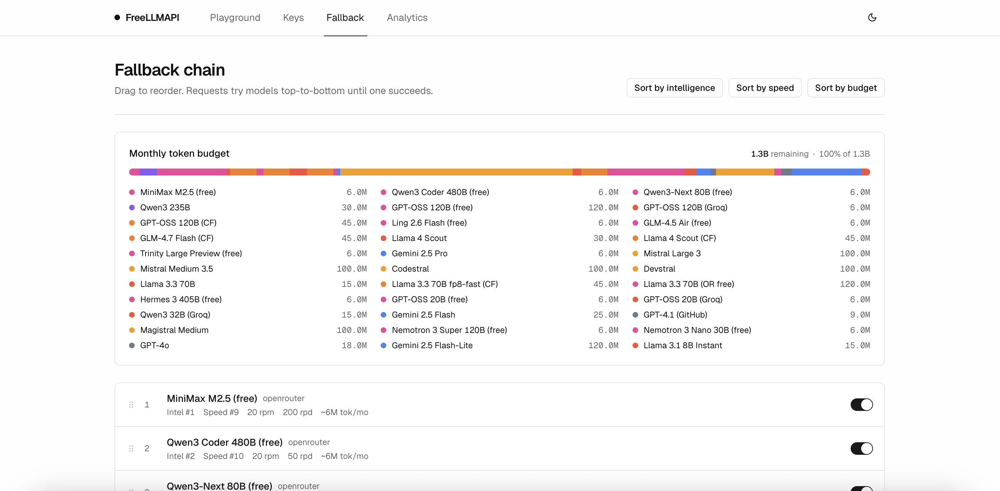
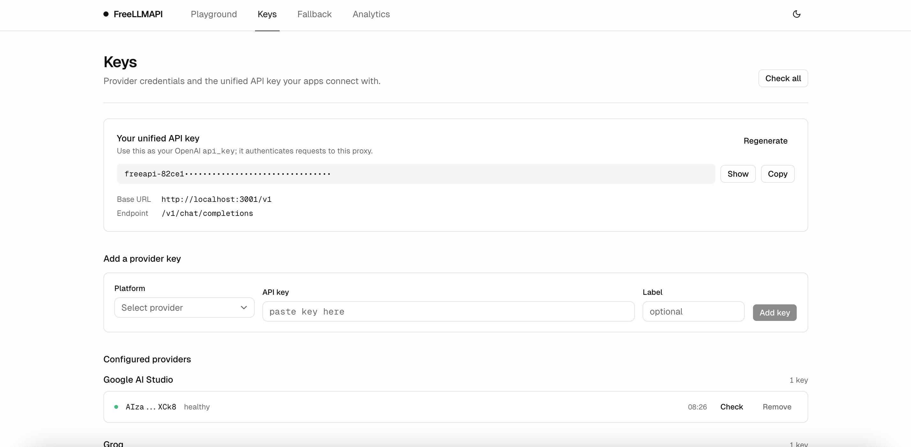
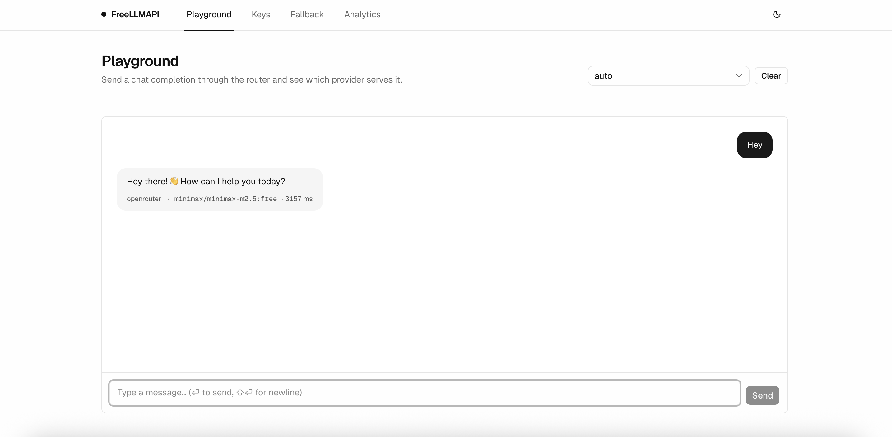

客户端兼容层
同一服务暴露 OpenAI Chat Completions、Responses API、Anthropic Messages API，还支持图像生成、TTS 与 embeddings。
OpenAI SDK
Claude Code
Codex CLI
FreeLLMAPI 是一个 TypeScript 自托管代理：把 Google、Groq、Cerebras、Mistral、GitHub Models、Cloudflare、OpenRouter 等 16 家免费层聚到同一个 /v1 入口，并补了 Responses API、Anthropic Messages API、图片生成、TTS、embeddings、自动切换和密钥加密存储。
它最有价值的地方不是省下一两个 SDK，而是把路由、失败切换、密钥保护、统一认证和客户端兼容层一起打包；同时 README 也明确写了个人实验、非生产、不要公网暴露、并逐家标注 ToS 风险。
对于 OpenAI SDK、Claude Code、Codex CLI、LangChain、Continue 这类客户端，它把“切十几家接口”改写成“只换 base_url”。
FreeLLMAPI 的传播点很强，但卡片更值得强调的是系统完整度：一端兼容 OpenAI SDK、Responses API、Anthropic Messages API、图片生成、TTS 和 embeddings，另一端连接 16 家免费模型入口与任意 OpenAI-compatible 自定义端点；中间再补上按 key 追踪 RPM/RPD/TPM/TPD、自动 failover、30 分钟 sticky session、AES-256-GCM 密钥加密、统一 bearer key、React 管理台与 live catalog。这使它更像一层“个人 AI 网关操作系统”，而不是简单代理脚本。与此同时，作者在 README 里反复画线：仅限个人实验、不要当生产后端、不要公开分享给别人、不同 provider 的 ToS 风险并不相同。
同一服务暴露 OpenAI Chat Completions、Responses API、Anthropic Messages API，还支持图像生成、TTS 与 embeddings。
按 provider / model / key 追踪 RPM、RPD、TPM、TPD，遇到 429、5xx、timeout 会进入 cooldown 并跳下一个候选。
统一 bearer key、AES-256-GCM 加密存储、SQLite、健康检查、React + Vite 仪表盘与 live catalog，让“个人网关”可维护。

图中展示：统一 OpenAI-compatible 请求先进入 Express proxy，再交给 router 依次挑 model / key，若遇到 429、5xx 或超时就跳到下一 provider。
README 明写拿不到 GPT-5、Claude Opus 级别推理能力，日内还会随着高优模型额度耗尽而退化。
作者明确写了 no SLA、free tiers can change、latency highly variable；这是一层实验网关，不是签约推理基础设施。
README 直接说 single-user、local-first、不要暴露到互联网；共享给别人会同时踩安全边界和条款边界。
README 单列了 ToS review：有 likely OK，也有 caution、ambiguous、avoid。项目本身已经提示了合规差异。
| Provider | Verdict | README 摘要 |
|---|---|---|
| Groq / Cerebras / Mistral / OpenRouter / Zhipu / OVH | Likely OK | 更偏个人/内部使用可辩护，但仍不允许 resale、共享 key、把免费层当公共后端出售。 |
| Google Gemini / Cloudflare / NVIDIA NIM / GitHub Models / Z.ai | Caution / Ambiguous | 有“professional use”“evaluation only”“experimentation only”或 anti-traffic-redirect 等条款，需要按各家政策自己判断。 |
| Cohere | Avoid | README 直接写了不建议，原因是条款对 personal / household 用途限制更严格。 |
| 整体规则 | Boundary First | README 给出的原则是：一 provider 一账户、不转售、不共享 endpoint 给其他人、不要把免费层当稳定生产后端。 |


个人实验、多客户端统一接入、想研究 OpenAI / Anthropic 兼容层、failover 策略、key 加密与本地 dashboard 的人。
对外共享、生产 SLA、商业转售、团队公用后端，或把它包装成“免费替代一切闭源 API”的叙事。
统一协议层、动态 provider 路由、per-key quota ledger、兼容多客户端 wire format，这些设计思路远比“免费额度”本身更值得学。
Source: tashfeenahmed/freellmapi · Homepage: freellmapi.co · Verified on 2026-06-25 · Theme: hardblue